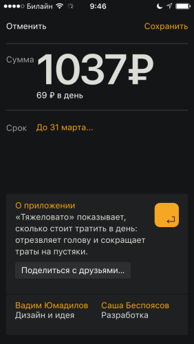

Мой перманентный читатель знает, что я достаточно внимательно отношусь к деньгам. Стараюсь не покупать лишнего, а теперь и вовсе экономить.
Поставил в начале марта приложение, которое автоматически высчитывает дневной бюджет исходя из месячного бюджета и суммы трат.
На статью «Супермаркеты» выделил в начале месяца 15000 рублей. На настоящий момент до конца месяца у меня осталось 69 рублей на день, притом, что за последние два дня я вообще не потратил ни копейки.
